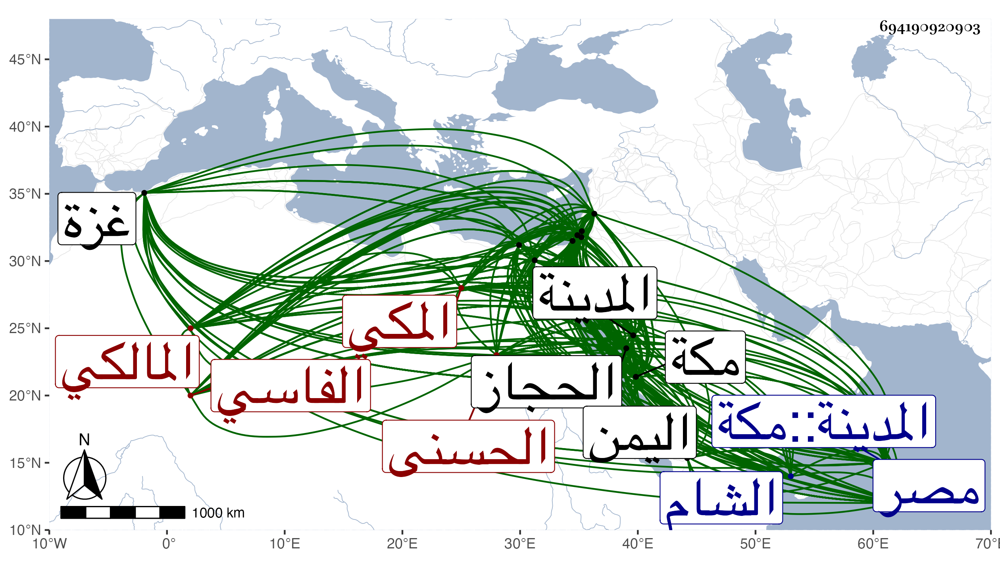

0902Sakhawi.DawLamic.ITO20230111-ara1.EIS1600.694190920903
Biography ID: 694190920903
33
محمد بن أحمد بن علي بن أبي عبد الله محمد بن محمد بن عبد الرحمن بن محمد ابن أحمد بن علي بن عبد الرحمن بن سعيد بن عبد الملك التقي أبو عبد الله وأبو الطيب وبها اشتهر ابن الشهاب أبي العباس بن أبي الحسن الحسنى الفاسي المكي المالكي شيخ الحرام والماضي أبوه ويعرف بالتقي الفاسي . ولد في ربيع الأول سنة خمس وسبعين وسبعمائة بمكة ونشأ بها وبالمدينة لتحوله إليها مع أمه في سنة ثلاث وثمانين وقتا وحفظ القرآن وصلى به على العادة بمقام الحنبلي وأربعى النووى باشاراتها والعمدة والرسالة والمختصر الفرعيين وألفية ابن مالك وجانبا كبيرا من المختصر الأصلي ، وعرض على جماعة بالمدينة ومكة بل لما كان بالمدينة سمع بها من فاطمة ابنة الشهاب الحرازي ثم طلب بنفسه فسمع ببلده من ابن صديق والشهاب بن الناصح والقاضي نور الدين علي بن أحمد النويري وجماعة وبالمدينة أيضا من البرهان بن فرحون وغيره ودخل القاهرة غير مرة أولها في سنة سبع وتسعين فقرأ بها على البلقيني وابن الملقن والعراقي والهيثمي والتنوخي ومريم ابنة الأذرعي وكذا دخل دمشق مرارا أولها في التي تليها فقرأ بها وبصالحيتها وغيرها من غوطتها على أبي هريرة بن الذهبي وابن أبي المجد وخديجة ابنة ابن سلطان في آخرين وببيت المقدس على الشهاب بن العلائي وغيره وبغزة والرملة ونابلس واسكندرية وغيرها ، ودخل اليمن مرارا أولها في سنة خمس وثمانمائة وسمع بها من الوجيه عبد الرحمن بن حيدر الدهقلي والشهاب أحمد بن محمد بن محمد بن عياش الدمشقي وطائفة ، وأجاز له قبل هذا كله أبو بكر بن المحب والتاج أحمد بن محمد بن عبد الله بن محبوب والزين عبد الرحمن بن الأستاذ الحلبي و القيراطي ، وبلغت عدة شيوخه بالسماع والإجازة نحو الخمسمائة ، وأخذ علم الحديث عن العراقي والجمال بن ظهيرة والشهاب بن حجي وأذنوا له في تدريسه ووصفه الولي العراقي وشيخنا ومن بينهما بالحفظ ، والفقه عن ابن عم أبيه الشريف عبد الرحمن بن أبي الخير الحسنى والتاج بهرام والزين خلف وأبي عبد الله الوانوغى وأذنوا له أيضا في الافتاء والتدريس واصول الفقه عن أبي الفتح صدقة التزمنتى والوانوغى أيضا والبرهان الابناسي والشمس القليوبى وعنه أخذ النحو أيضا ، وعني بعلم الحديث أتم عناية وكتب الكثير وأفاد وانتفع الناس به وأخذوا عنه ، ودرس وأفتى وحدث بالحرمين والقاهرة ودمشق وبلاد اليمن بجملة من مروياته ومؤلفاته سمع منه الأئمة وفي الأحياء بمكة جماعة ممن أخذ عنه ، قال شيخنا في معجمه : حدثني من لفظه بأحاديث وأجاز لأولادي ولم يخلف بالحجاز مثله ، وقرض له شيخنا غير ما تصنيف وكان هو يعترف بالتلمذة لشيخنا وتقدمه على سائر الجماعة حتى شيخهما العراقي كما بينت ذلك في الجواهر ، وخرج له الجمال ابن موسى معجما مات قبل إكماله ، وكان ذا يد طولى في الحديث والتاريخ والسير واسع الحفظ واعتنى بأخبار بلده فأحيا معالمها وأوضح مجاهلها وجدد مآثرها وترجم أعيانها فكتب لها تاريخا حافلا سماه شفاء الغرام بأخبار البلد الحرام في مجلدين جمع فيه ما ذكره الأزرقي وزاد عليه ما تجدد بعده بل وما قبله واحتصره مرارا وعمل العقد الثمين في تاريخ البلد الأمين في أربع مجلدات ترجم فيه جماعة من حكام مكة وولاتها وقضاتها وخطبائها وأئمتها ومؤذنيها وجماعة من العلماء والرواة من أهلها وكذا من سكنها سنين أو مات بها وجماعة لهم مآثر فيها أو فيما أضيف له ، رتبه على المعجم ثم اختصره وكذا ذيل على سير النبلاء وعلى التقييد لابن نقطة وكتابا في الأخريات سود غالبه وفي الأذكار والدعوات وفي المناسك على مذهب الشافعي وملك اختصر حياة الحيوان للدميري وخرج الأربعين المتباينات والفهرست كلاهما لنفسه وكذا خرج لجماعة من شيوخه ، وتصانيفه كثيرة ضاع أكثرها لاشتراطه في وقفها أن لا تعار لمكي سيما وقد تعدى الناظر بالمنع لغيرهم خوفا منهم ، وولى قضاة المالكية بمكة في شوال سنة سبع وثمانمائة من قبل الناصر فرج ولم يستقل به قبله غيره وعزل مرارا . ومات وهو معزول بمكة في شوال سنة اثنتين وثلاثين بعد أن عمي في سنة ثمان وعشرين ومكن من قدحه فما أطاق ذلك ولا فاده وكان الأصل أعشى ، ولم يكن ذلك يمانع له عن التأليف بل هو لقوة حافظته ومعرفته بالمظان يرشد من يطالع له وهو يملي على من يكتب وبالجملة فتصانيفه إذ ذاك ليست كما ينبغي ولم يخلف بالحجاز بعده مثله وقد ترجم نفسه في تاريخ مكة بزيادة على كراس وفي ذيل التقييد وأورده ابن فهد في معجم أبيه مطولا وفي غيره ، وشيخنا في أنبائه و معجمه وكذا ذكرته في تاريخ المدينة وغيرها ، والمقريزي في عقوده وقال أنه تردد إليه بمكة وبالقاهرة وهو بحر علم وكنز فوائد لم يخلف بالحجاز مثله ، وكان إماما علامة فقيها حافظا للأسماء والكنى ذا معرفة تامة بالشيوخ والبلدان ويد طولى في الديث والتاريخ والفقه وأصول مفيد الحجاز البلادية وعالمها لطيف الذات حسن الأخلاق عارفا بالأمور الدينية والدنيوية له غور ودهاء وتجربة وحسن عشرة وحلاوة لسان بحيث يجلب القلوب بحسن عبارته ولطيف إشارته قال شيخنا : وافقني في السماع كثيرا بمصر والشام واليمن وغيرها وكنت أوده وأعظمه وأقوم معه في مهماته ولقد ساءني موته وأسفت على فقد مثله رحمه الله وإيانا .
